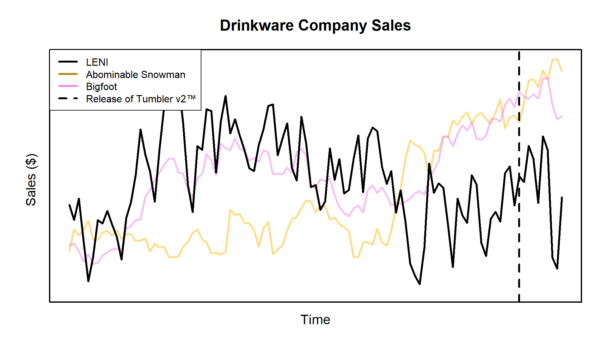
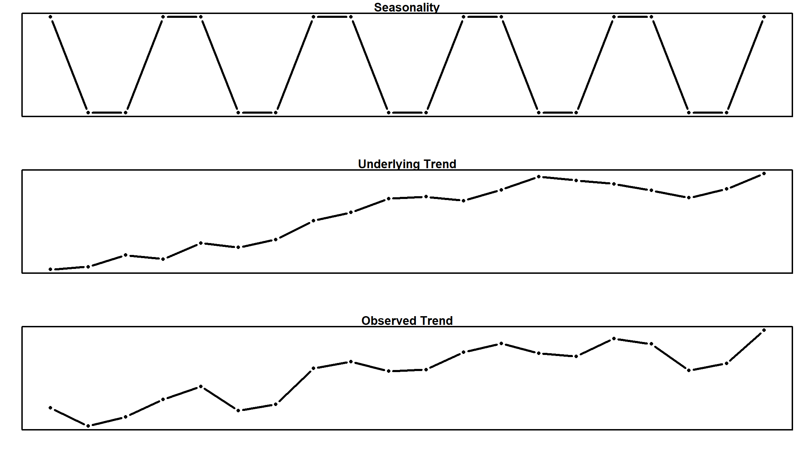
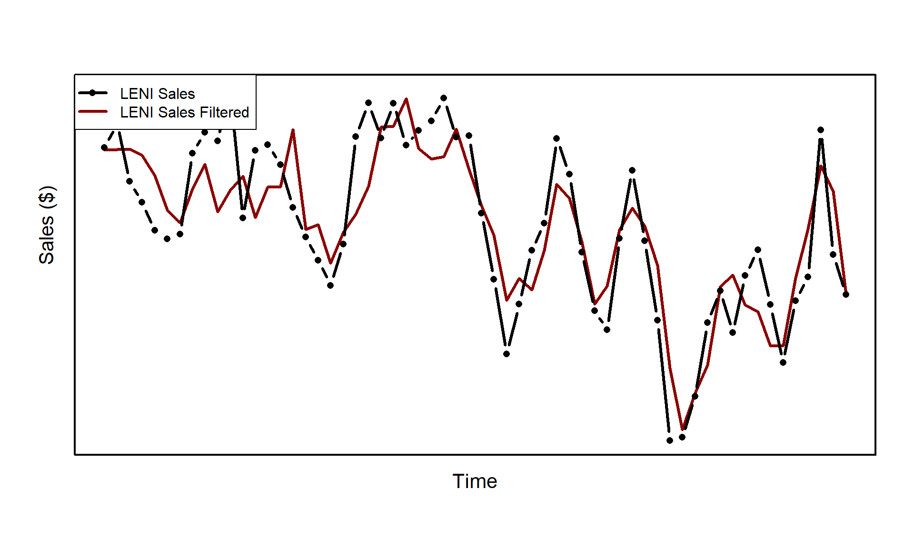
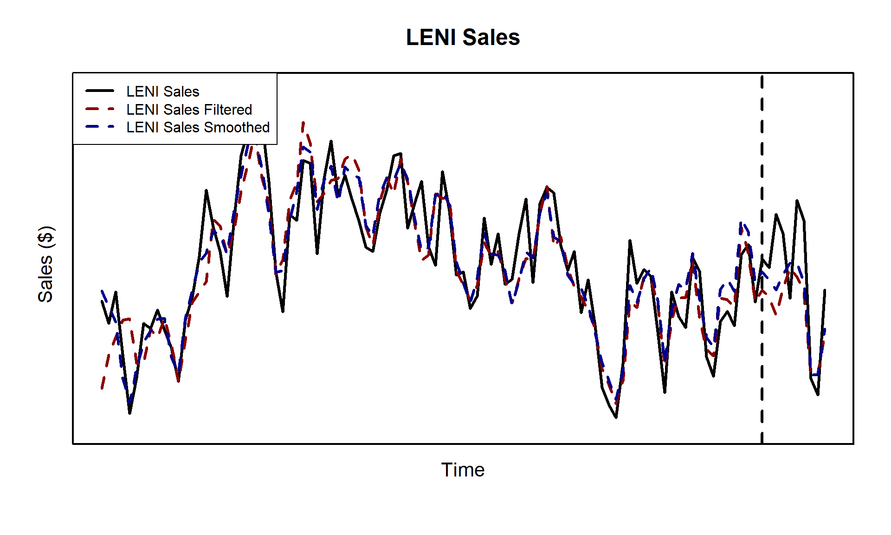

An Unhinged Introduction to State Space Models with STAN - Theory
library(cmdstanr)
library(kableExtra)
knitr::opts_chunk$set(cache = F)
options(mc.cores = parallel::detectCores())
state_space_utils <- new.env()
source('state_space_model_utilities.R', state_space_utils)
season_length <- 7; number_seasons <- 10
n_tot <- season_length * number_seasons
x1 <- (cumsum(rnorm(n_tot, 0,0.5)) + rnorm(n_tot, 0,.01)) |> abs()
x2 <- (cumsum(rnorm(n_tot, 0,0.5)) + rnorm(n_tot, 0,.01)) |> abs()
x_mat <- cbind(x1,x2)
beta_vec <- c(-1,1)
ss <- cos(seq(0,2*pi, length.out=season_length))*1
ss <- ss - mean(ss)
ss_vec <- c(ss)[-length(ss)]
ss_var <- 0.01^2;
slope_start <- 0; slope_var <- 1e-30; slope_vec <- c(slope_start)
mu_start <- rnorm(1,0,1); mu_var <- 0.05^2; mu_vec <- c(mu_start)
noise_var <- 0.5
y_vec <- ss_comp <- c()
# i <- 1
for (i in 1:n_tot){
ss_comp <- c(ss_vec[1], ss_comp)
y_vec <- c(y_vec, mu_vec[i] + (x_mat %*% beta_vec)[i] + ss_vec[1] + rnorm(1,0,sqrt(noise_var)))
ss_vec <- c(-sum(ss_vec) + rnorm(1, 0, sqrt(ss_var)), ss_vec[-length(ss_vec)])
slope_vec <- c(slope_vec, slope_vec[i] + rnorm(1, 0, sqrt(slope_var)))
mu_vec <- c(mu_vec, mu_vec[i] + slope_vec[i] + rnorm(1, 0,sqrt(mu_var)))
}
# Add 20% of series mean to the last 10 iterations
is_new_prod_live <- seq_along(y_vec) >= length(y_vec) - 9
y_vec[is_new_prod_live] <- abs(y_vec[is_new_prod_live])*0.5 +
y_vec[is_new_prod_live]
data.frame(leni=y_vec, abdominable=x1, bigfoot=x2) |>
write.csv('state_space_data.csv', row.names = F)Casting Calls
Motivation: More Ice Please
Let’s say you work for a drinkware company, we’ll call it something generic, maybe “Large bi-pEdal sNow cryptId”? Or LENI for short. LENI sells mugs, wine glasses, water glasses, and tumblers. The recent lack of innovation in the tumbler market has led to public outcry. As a response, you release Tumbler v2™. This exciting new technology features the same size tumblers you know an love, but with double the ice capacity. You even come up with a catchy slogan:
As a result of your genius ideas, your tumbler sales being to pick up:
plot(y_vec, type='n', lwd=3, cex.axis=1.2, cex=1.2, cex.main=1.5, main='Drinkware Company Sales',
ylab='', xlab='', xaxt='n', yaxt='n', ylim=range(c(y_vec, x1, x2, ss_comp)))
axis(side=1, at=mean(seq_along(y_vec)), labels='Time', cex.axis=1.3, lwd.ticks = 0)
axis(side=2, at=mean(y_vec), labels='Sales ($)', cex.axis=1.3, lwd.ticks = 0)
lines(x1, lwd=3, col=adjustcolor('darkgoldenrod1', 0.5))
lines(x2, lwd=3, col=adjustcolor('violet', 0.5))
lines(y_vec, lwd=3, type='b', pch=16)
# lines(ss_comp, lwd=3, pch=16, col='gold')
box(lwd=2)
abline(v = length(y_vec)-9.5, lty=2, lwd=3)
legend('topleft', legend=c('LENI', 'Abominable Snowman', 'Bigfoot', 'Release of Tumbler v2™'),
lty=c(1,1,1,2), lwd=rep(3,4),
col=c('black', 'darkgoldenrod', 'violet', 'black'), bg=adjustcolor('white', 0.5), pch=c(16,rep(NA,3)))
The final frontier
Your tumbler sales are putting all your rival drinkware companies, like “Abominable Snowman”, to shame. But just how much of your sales are incremental and aren’t just due to the usual seasonality, or positive overall industry growth. Can you quantify with some degree of certain the incremental sales you’ve realized from launching Tumbler v2™?
To approach this problem, we will use state space models. A class of models that assumes that our data generating process has some underlying state that gives rise to our actually observed variables. For instance, in the time series plot above, a state space approach would assume that each point in the time series is generated from some latent unobserved state which has its own distribution. For this time series analysis state space problem, we will used the widely adopted and used approach of (James Durbin and Koopman 2012). The governing equation for this system is given by:
\[\begin{equation} y_t = Z_t\alpha_t + \varepsilon_t \hspace{10mm} \text{(1)} \end{equation}\] \[\begin{equation} \alpha_{t+1} = T_t \alpha_t + R_t \eta_t \hspace{6mm} \text{(2)} \end{equation}\]
where
\[\varepsilon_t \sim \mathcal{N}(0,H_t) \hspace{2mm} \text{and} \hspace{2mm} \eta_t \sim \mathcal{N}(0,Q_t)\] You might only recognize \(y_t\), the sales from our Tumbler v2, from the equation above. But allow me to introduce the full cast of characters:
vec_var <- c('$y_t$', '$\\alpha_t$', '$\\varepsilon_t$', '$\\eta_t$', '', '$a_1$')
vec_dim <- c('$p \\times 1$', '$m \\times 1$', '$p \\times 1$', '$r \\times 1$', '', '$m \\times 1$')
vec_desc <- c('Observations', 'State', 'Obs. Disturbance', 'State Disturbance', '', 'Initial State Expected Value')
mat_vec <- c('$Z_t$', '$T_t$', '$H_t$', '$R_t$', '$Q_t$', '$P_1$')
mat_dim <- c('$p \\times m$', '$m \\times m$', '$p \\times p$', '$m \\times r$', '$r \\times r$',
'$m \\times m$')
mat_desc <- c('Design Matrix', 'Transition Matrix', 'Obs. Covariance Matrix', 'State Disturbance Selection Matrix',
'State Covariance Matrix', 'Initial State Covariance Matrix')
cbind(vec_var, vec_dim, vec_desc, mat_vec, mat_dim, mat_desc) %>%
kable(col.names=NULL) %>% kable_styling(position='center') %>%
add_header_above(c('Vectors'=3, 'Matricies' = 3))| \(y_t\) | \(p \times 1\) | Observations | \(Z_t\) | \(p \times m\) | Design Matrix |
| \(\alpha_t\) | \(m \times 1\) | State | \(T_t\) | \(m \times m\) | Transition Matrix |
| \(\varepsilon_t\) | \(p \times 1\) | Obs. Disturbance | \(H_t\) | \(p \times p\) | Obs. Covariance Matrix |
| \(\eta_t\) | \(r \times 1\) | State Disturbance | \(R_t\) | \(m \times r\) | State Disturbance Selection Matrix |
| \(Q_t\) | \(r \times r\) | State Covariance Matrix | |||
| \(a_1\) | \(m \times 1\) | Initial State Expected Value | \(P_1\) | \(m \times m\) | Initial State Covariance Matrix |
Here \(\alpha_t\) is the underlying latent state that gives rise to our time series realizations \(y_t\). As stated before, the latent state \(\alpha_t\) has its own distribution, which we can now deduce from the equation above is given by \(\alpha_t \sim \mathcal{N}(a_t, Q_t)\). Notice from our table above that \(\alpha_t\) is not the same size as \(y_t\). Our observations \(y_t\) is a vector of length \(p\), which will be 1 for our case here. Conversely, \(\alpha_t\) is of size \(m\). This is because \(\alpha_t\) will act as the conduit for all the effects and assumptions we impose on the model.
This is one of the best utilities provided by state space models. We have the ability to add smaller effects together and extract them at the end of the modeling process to further understand the structure of our time series. For example, you might want to impose a 52 week seasonality (1 year), positive industry trend growth, additive regression effects, and maybe even a AR(n) process to account for autocorrelation. All of this information is packed in \(\alpha_t\) which we’ll demonstrate later.
The matrix \(Z_t\) provides the translation from \(\mathbb{R}^m\) to \(\mathbb{R}^p\), which our case is just one dimension. Therefore, \(Z_t\) reduces down to a vector of length \(m\), but this is not the case in general. Some of the data that \(Z_t\) might hold is the \(x_t\) for the regression component of our time series. Usually, \(Z_t\) is filled with 1s and 0s to select different components of \(\alpha_t\) that are used for \(y_t\). As we’ll see later, there are many components of \(\alpha_t\) that don’t directly impact \(y_t\), but are strategically placed to help \(\alpha_t\) itself evolve over time.
This is a great segue to our transition matrix \(T_t\). The transition matrix is what evolves \(\alpha_t\) to the next state \(\alpha_{t+1}\). This again can take multiple forms. It might be the stage in the process where a positive industry trend is added to the overall series or where we move from season to season.
Finally we have \(R_t\), the state disturbance selection matrix. Notice that everything up to this point has had a \(t\) subscript. While we are modeling a time series, it is not true that every element of \(\alpha_t\) has to vary over time. In fact, most of the time the regression coefficients (if included) are usually static with respect to time. The way we tell this model to account for static elements of \(\alpha_t\) is to not add any disturbance to them. Lets consider a very simple local linear trend model:
\[\begin{align} y_t &= \mu_t + \varepsilon_t\\ \mu_{t + 1} &= \mu_{t} + \nu_{t} + \eta_{t}\\ \nu_{t+1} &= \nu_{t} \end{align}\]
Our cast of characters now wear the following costumes:
\[\alpha_t = \begin{bmatrix} \mu_t \\ \nu_t\end{bmatrix} \hspace{10mm} Z_t = \begin{bmatrix} 1 & 0\\ \end{bmatrix}\] \[T_t = \begin{bmatrix}1 & 1\\ 0 & 1 \end{bmatrix} \hspace{5mm} R_t = \begin{bmatrix}1\\ 0\end{bmatrix}\] Clearly, \(\eta_t\) is just a 1-D normal with variance \(Q_t\), and thus as \(\alpha_t\) evolves over time its element \(\nu_{n+1} = \nu_{n}\) for all \(n\in [1,t]\). The variable \(\nu\) here could be considered a static industry trend and \(\mu_t\) is the random walk it perturbs. I’m sure you can already see the powerful flexibility we’ve been afforded by this modeling system.
Now, the only variables I have yet to mention are \(a_1\) and \(P_1\). These dictate the distribution of our starting state. That is \(\alpha_1 \sim \mathcal{N}(a_1, P_1)\). These initial values are assumed to be known at the time of modeling. In reality these are rarely known and there is a large amount of theory to approximate the best starting value of these based on asymptotics. For more information, check out chapter 5 of (James Durbin and Koopman 2012). But, we are Bayesians after all are we not? If we don’t know something we just chuck a prior at it. Although we will abide by the suggestion in chapter 5 and set \(a_1 = \bf{0}\).
I don’t know if you can tell, but this notation is incredibly loaded, and unfortunately it is only going to get worse before it gets better. The most loaded of them all is understanding when we are talking about a state vector \(\alpha_t\) or the expected value of a state, denoted by \(a_t\). To hopefully alleviate some of notation burden, here is a footnote that shows the definition for all \(\alpha_t\) or \(a_t\) variations we might encounter.1
I prefer Autumn
One of the key components we’ll utilize is seasonality. This means that for some repeating point in time, we want to see the same, or slightly modified effect. For example, we might observe seasonality in consumer purchasing behavior. Big spikes occur during the holidays when everyone is purchasing Tumbler v2s to give to their ice enthusiast friends at Christmas, but then sales slowly die off. It’s a tale as old as time that we’ll see again next Christmas.
We’ll go about this by considering a 4 season example. This might be data that is collected every quarter for a company. We’ll define four season parameters denoted by \(\tau_j\), where \(j \in [1,4]\). We’ll make the assumption that all seasonal effects will add to zero. This makes sense if we assume that a seasonal effect is just some perturbation against the underlying trend. Consider the following:
n_ex1 <- 4*5
ss_comp_ex1 <- cos(seq(0,2*pi, length.out=4))*2
ss_ex1 <- rep(ss_comp_ex1 - mean(ss_comp_ex1),5)
trend_ex1 <- cumsum(rnorm(n_ex1) + 0.5)
t_cex <- 1.6
par(mfrow=c(3,1))
# layout_mat <- matrix(c(1,2,3,3), nrow=2, byrow=T)
# layout(layout_mat)
par(mar=c(5,3,2,2)-0.5)
plot(ss_ex1, type='b', lwd=3, pch=16, xlab='', ylab='',
main='Seasonality', xaxt='n', yaxt='n',cex.main=t_cex)
box(lwd=2)
plot(trend_ex1, pch=16, type='b', lwd=3, xlab='', ylab='',
main='Underlying Trend', xaxt='n', yaxt='n', cex.main=t_cex)
box(lwd=2)
plot(ss_ex1 + trend_ex1, lwd=3, pch=16, type='b', xlab='', ylab='',
main='Observed Trend', xaxt='n', yaxt='n', cex.main=t_cex)
box(lwd=2)
Let’s write our system in plain Greek and forget about the matrices for a second:
\[\begin{align} y_t &= \mu_t + \tau_t + \varepsilon_t\\ \mu_{t + 1} &= \mu_{t} + \eta_{t}^\mu\\ \tau_{t+1} &= -\sum_{j=1}^{s-1}\tau_{t + 1 - j} + \eta_t^\tau \end{align}\]
For some, that summation might have come out of left field. But recall that we defined our seasonality components to sum to zero. Therefore, for any \(s\) length seasonality trend, we only need \(s-1\) components to recover the full trend. For example if we have a seasonal trend of length 4 and trying to find the expected seasonal component of time \(t+1\), we can use the following:
\[\begin{align} 0 &= \tau_{t+1} + \tau_{t} + \tau_{t-1} + \tau_{t-2}\\ \tau_{t+1} &= -(\tau_{t} + \tau_{t-1} + \tau_{t-2})\\ \tau_{t+1} &= -\sum_{j=1}^{s-1}\tau_{t + 1 - j}\\ \end{align}\]
Since we want to allow our seasonality to vary over time, we add a disturbance \(\eta_t^\tau\) every time the next expected seasonality component \(\tau_{t+1}\) is calculated. Note, since we want both \(\mu_t\) and \(\tau_t\) to vary over time, \(\eta_t\) will be a vector of length 2. Finally, we can write our state space system matrices as:
\[\alpha_t = \begin{bmatrix} \mu_t \\ \tau_{t} \\ \tau_{t-1} \\ \tau_{t-2}\end{bmatrix} \hspace{10mm} Z_t = \begin{bmatrix} 1 & 1 & 0 & 0\\ \end{bmatrix}\] \[T_t = \begin{bmatrix}1 & 0 & 0 & 0\\ 0 & -1 & -1 & -1\\0 & 1 & 0 & 0\\0 & 0 & 1 & 0\end{bmatrix} \hspace{5mm} R_t = \begin{bmatrix}1 & 0\\ 0 & 1\\0 &0\\0&0\end{bmatrix}\] The 1s in the third and fourth row of \(T_t\) ensure that we carry the \(s-2\) most recent seasonal components with us to the next state. The 0s in the third and fourth row of \(R_t\) select our disturbance draw such that no variation will be applied to the \(s-2\) carryover seasonal states.
Who got a call back?
So now that we’ve hosted the auditions, who should we call back to comprise our final ensemble? Looking at the sales trend line, we see that there are two main competitors: “Abominable Snowman” and “Bigfoot”. We’ll use those two trends as covariates for our state space model. We can omit the slope \(\nu_t\) with our reasoning being that any industry trend will already be captured by including the covariates. Finally, a 7 day seasonality trend will be considered to account for any within week variation. In practice, this can usually be also be omitted if we assume that the covariates can explain this variation as well, but we’ll keep seasonality for demonstration.
Now, let me introduce the stars of the play:
\[\alpha_t = \begin{bmatrix} \mu_t \\ \tau_{t} \\ \tau_{t-1} \\ \tau_{t-2}\\ \tau_{t-3}\\ \tau_{t-4}\\ \tau_{t-5}\\ \beta_a\\ \beta_b\end{bmatrix} \hspace{10mm} Z_t = \begin{bmatrix} 1 & 1 & 0 & 0 & 0 & 0 & 0 & x_{a} & x_b\\ \end{bmatrix}\] where \((\beta_a, \beta_b)\) and \((x_a, x_b)\) are the regression coefficients and observed sales trend for “Abominable Snowman” and “Bigfoot”, respectively.
\[T_t = \begin{bmatrix}1 & 0 & 0 & 0 & 0 & 0 & 0 & 0 & 0\\ 0 & -1 & -1 & -1 & -1 & -1 & -1 & 0 & 0\\ 0 & 1 & 0 & 0 & 0 & 0 & 0 & 0 & 0\\ 0 & 0 & 1 & 0 & 0 & 0 & 0 & 0 & 0\\ 0 & 0 & 0 & 1 & 0 & 0 & 0 & 0 & 0\\ 0 & 0 & 0 & 0 & 1 & 0 & 0 & 0 & 0\\ 0 & 0 & 0 & 0 & 0 & 1 & 0 & 0 & 0\\ 0 & 0 & 0 & 0 & 0 & 0 & 0 & 1 & 0\\ 0 & 0 & 0 & 0 & 0 & 0 & 0 & 0 & 1\\\end{bmatrix} \hspace{5mm} R_t = \begin{bmatrix}1 & 0\\ 0 & 1\\0 &0\\0&0\\0&0\\0&0\\0&0\\0&0\\0&0\end{bmatrix}\]
Since we are only varying the seasonality and \(\mu\) over time, our disturbance \(\eta_t\) covariance matrix is given by \(Q_t = \text{diag}(\sigma_{\mu}, \sigma_{\tau})\). Furthermore, since \(y_t\) is univariate, our disturbance \(\varepsilon_t\) has scalar variance \(H_t = \sigma_y\).
Setting the Stage
Mine is a Brita
The first step of our modeling process is filtering.
For sake of completeness, let’s review the assumptions2 we made about our data generating process by imposing this system of equations:
- \(y_t\) is a linear function of the latent state \(\alpha_t\)
- The disturbances of our data generating process are normally distributed
- The disturbances of our latent state are normally distributed.
These unassuming3 assumptions allow us to now leverage the power of the Kalman filter. Without going into too much detail, filtering is just the process of updating what we expect given what we have observed. Assume that we have seen the first 4 realizations of some time series process. We are not in the dark about. We have some knowledge about what the 5th observation might be. If the first 4 had values between 1 and 10, we can be pretty sure that the 5th realization won’t be 1,000. This is of course a gross oversimplification, but if our process follows the assumptions outlined above, we can use the Kalman filter to quantify the uncertainty and expected value of our 5th observation.
If we had the time I would write out the derivation for you, but I already feel like I’m going to write too much. Instead, I refer you to page 82-85 of (James Durbin and Koopman 2012) or this cool blog post. Now, you’ve met the star cast but do you know their origin story:
\[ \begin{align*} v_t &= y_t - Z_ta_t & F_t &= Z_t P_t Z^\prime_t + H_t \\ a_{t|t} &= a_t + P_t Z^\prime_t F^{-1}_t v_t & P_{t|t} &= P_t - P_t Z^\prime_t F^{-1}_t Z_t P_t \\ a_{t+1} &= T_t a_t + K_t v_t & P_{t+1} &= T_t P_t (T_t - K_t Z_t)^\prime + R_t Q_t R^\prime_t \end{align*} \] Looks like we picked up some side characters on the way. The matrix \(K_t\) is referred to as the Kalman Gain and is given by \(K_t = T_tP_tZ^\prime_tF^{-1}_t\). It encodes how much we should trust a given observation \(y_t\). If the gain is high, then the observation uncertainty is low and the next predicted state has a high dependence on the previous observation. If the gain is low, there is high uncertainty in the observation and thus we put most of our weight in the previous predicted state \(a_t\). For a more detailed inerpretation, take a look at this stackoverflow post.
The matrix \(F_t\) is defined as \(\textrm{Var}[v_t|Y_{t-1}]\) and the conditional expected value and variance of the state is defined as:
\[ \begin{align*} a_{t|t}&=\mathbb{E}[\alpha_t|Y_t] & P_{t|t}&=\textrm{Var}[\alpha_t|Y_t] \\ \end{align*} \] where \(Y_t = \{y_1,y_2,\dots,y_t\}\). In practice, you can actually ignore the middle row (\(*_{t|t}\)) but we include it for completeness. Now, let’s apply the above equations to produce the filtered expected states \(a_{t|t}\). Since we are trying to understand the state of the system prior to our launch of the Tumbler v2™, we will exclude the data post launch from our analysis.
y_vec_no_prod <- y_vec[!is_new_prod_live]
k_obj <- state_space_utils$forward_backward_pass(
y_vec_no_prod, a_1=rep(0,9),
P_1 = state_space_utils$iden(9)*0.5,
var_vec = c(mu_var, ss_var),
noise_var = c(noise_var),
params = list('include_slope'=F, x_mat=cbind(x1,x2)[!is_new_prod_live,], n_seasons=7)
)
filtered <- y_vec_no_prod - (k_obj$forw$v |> unlist())
smoothed <- y_vec_no_prod - (k_obj$back$v_smth |> unlist())
sim <- state_space_utils$simulate_state(
k_obj$back$alpha_smth, a_1=rep(0,9),
P_1 = state_space_utils$iden(9)*0.5,
var_vec = c(mu_var, ss_var), noise_var = c(noise_var),
params = list('include_slope'=F, x_mat=cbind(x1,x2)[!is_new_prod_live,], n_seasons=7)
)
plot(y_vec_no_prod, type='n', lwd=3, cex.axis=1.2, cex=1.2, cex.main=1.5,
ylab='', xlab='', xaxt='n', yaxt='n', ylim=range(c(y_vec_no_prod, filtered, smoothed)))
axis(side=1, at=mean(seq_along(y_vec_no_prod)), labels='Time', cex.axis=1.3, lwd.ticks = 0)
axis(side=2, at=mean(y_vec_no_prod), labels='Sales ($)', cex.axis=1.3, lwd.ticks = 0)
lines(filtered, lwd=3, col='darkred')
lines(y_vec_no_prod, lwd=3, type='b', pch=16)
box(lwd=2)
legend('topleft', legend=c('LENI Sales', 'LENI Sales Filtered'), lwd=3,col=c('black', 'darkred'), pch=c(16,NA))
Don’t forget to Moisturize
So you’ve done your filtering, but we don’t want dry flaky equations. For that you’re going to need to moisturize, or as the mathematicians call it: smoothing. You can think of filtering as the forward pass and smoothing as the backward pass. Filtering helped us get the finish line and find the next expected quantity given what we have seen so far. But now that we are at the final time step, we can go backwards and update our states with the entire series of observations, \(Y_n\). There are smoothing equations for the smoothed disturbances of \(\varepsilon_t\) and \(\eta_t\), which we will denote \(\hat{\varepsilon}_t\) and \(\hat{\eta}_t\) respectively, but we will omit those since we are only concerned with the smoothed state \(\hat{\alpha}_t\) inference.
We define \(\hat{\alpha}_t = \mathbb{E}[\alpha_t|Y_n]\). Note, this is different from \(a_{t|t}\) in filtering due to the condition. The series \(Y_t\) is defined as the series of observations up to time \(t\) given by \(Y_t = \{y_1, y_2, \dots,y_t\}\), but \(Y_n\) is the entire series of \(n\) observations. As with filtering, I omit the proof of the smoothing equations and instead refer you to pages 88-91 of (James Durbin and Koopman 2012). The smoothing equations are relatively simpler, given by
\[ \begin{align*} r_{t-1} &= Z_t^\prime F_t^{-1} v_t + L_t^\prime r_t & \hat{\alpha_t} &= a_t + P_t r_{t-1} \end{align*} \] What fresh hell is this? We just keep getting more and more cast members? I promise, this was the last audition, they’ll be no more late additions. The matrix \(L_t\) is present only for convenience and is defined as \(L_t = T_t - K_t Z_t\). As I said before, this is the backward pass. When we start to compute our smoothed states, we will go in reverse following \(t=n,\dots,1\), with \(r_n = 0\). Let’s see how our smoothed trend \(\hat{\alpha}_t\) compares to our filtered trend:
plot(y_vec_no_prod, type='n', lwd=3, cex.axis=1.2, cex=1.2, cex.main=1.5,
ylab='', xlab='', xaxt='n', yaxt='n', ylim=range(c(y_vec_no_prod, filtered, smoothed)))
axis(side=1, at=mean(seq_along(y_vec_no_prod)), labels='Time', cex.axis=1.3, lwd.ticks = 0)
axis(side=2, at=mean(y_vec_no_prod), labels='Sales ($)', cex.axis=1.3, lwd.ticks = 0)
lines(filtered, lwd=3, col='darkred')
lines(smoothed, lwd=3, col='darkblue')
lines(y_vec_no_prod, lwd=3, type='b', pch=16)
box(lwd=2)
legend('topleft', legend=c('LENI Sales', 'LENI Sales Filtered', 'LENI Sales Smoothed'),
lwd=3,col=c('black', 'darkred', 'darkblue'),
bg=adjustcolor('white', 0.5), pch=c(16,NA,NA))
You’ll notice that the largest deviations from filtered to smooth are towards the beginning of the series when the system has the least amount of information.
Lots and Lots of Understudies
Alright, so we went forward, we went backward, what’s left before show time? Simulating. I’m not one for point estimates. If given the option I’d rather work with a distribution, which works nicely with our chosen Bayesian workflow. Our distribution of interest is \(P(\alpha|Y_n)\), with individual draws denoted as \(\tilde{\alpha}\). How do we go about sampling this? Luckily, Durbin and Koopman have us covered once again (J. Durbin and Koopman 2002).
The first step in simulating is realizing that we have the blueprints to play the system forward from some starting state \(\alpha_1\) if we are given \(H_t\), \(Q_t\), \(a_1\), and \(P_1\) (we’ll get to estimating those later). We’ll use the \(*^+\) notation for describing draws that have been generated from evolving our system forward with random initializations. For example, \(\alpha^+ = [\alpha_1^+, \alpha_2^+,\dots,\alpha_n^+]\), where \(\alpha_1^+\) was drawn from \(\mathcal{N}(a_1, P_1)\) and the rest of the states simulated from recursively applying equations \(\text{(1)}\) and \(\text{(2)}\).4 Here are the steps fully laid out for simulating \(*^+\):
- Draw \(\alpha^+_1\) from the distribution \(\mathcal{N}(a_1, P_1)\)
- Set \(t=1\)
- Draw \(\varepsilon_t\) from \(\mathcal{N}(0, H_t)\) and \(\nu_t\) from \(\mathcal{N}(0, Q_t)\)
- Simulate the observation \(y^+_t\) using equation \(\text{(1)}\)
- Simulate the next state \(\alpha^+_{t+1}\) using equation \(\text{(2)}\)
- Set \(t = t+1\)
- Return to step 3
Now that we have \(y^+\), we can calculate \(\hat{\alpha}^+\) defined by \(E[\alpha|y^+]\). The equations used for finding \(\hat{\alpha}^+\) are the same ones we used for filtering and smoothing above. Finally, we may use the culmination of the (J. Durbin and Koopman 2002) paper to yield \(\tilde{\alpha}\), given by:
\[\tilde{\alpha} = \alpha^+ - \hat{\alpha}^+ + \hat{\alpha}\] Using the methodology outline above, we can now plot the simulated states:
y_sim <- list()
alpha_sim <- list()
z_list <- state_space_utils$gen_Z_list(length(y_vec_no_prod), include_slope=F,
x_mat=cbind(x1,x2)[!is_new_prod_live,], n_seasons=7)
for (i in 1:100){
sim <- state_space_utils$simulate_state(
k_obj$back$alpha_smth, a_1=rep(0,9),
P_1 = state_space_utils$iden(9)*0.5,
var_vec = c(mu_var, ss_var), noise_var = c(noise_var),
params = list('include_slope'=F, x_mat=cbind(x1,x2)[!is_new_prod_live,], n_seasons=7)
)
alpha_sim[[i]] <- sim
y_sim[[i]] <- lapply(1:length(y_vec_no_prod), \(x) z_list[[x]] %*% sim[[x]]) |> unlist()
}
plot(y_vec_no_prod, type='n', lwd=3, cex.axis=1.2, cex=1.2, cex.main=1.5,
ylab='', xlab='', xaxt='n', yaxt='n', ylim=range(c(y_vec_no_prod, filtered, smoothed)))
axis(side=1, at=mean(seq_along(y_vec_no_prod)), labels='Time', cex.axis=1.3, lwd.ticks = 0)
axis(side=2, at=mean(y_vec_no_prod), labels='Sales ($)', cex.axis=1.3, lwd.ticks = 0)
box(lwd=2)
y_sim |> unlist() |> matrix(ncol=length(y_vec_no_prod), byrow=T) |>
state_space_utils$time_series_err()
lines(y_vec_no_prod, type='b', lwd=3, pch=16)
legend('topleft', legend=c('LENI Sales', 'Simulated State'),
col=c('black', NA),
pch=c(16,22),
pt.cex=c(1,2),
lwd=c(3,NA),
lty=c(1,NA),
pt.bg=c(NA, adjustcolor('darkblue',0.2)),
bg=adjustcolor('white', 0.5))
End of Act 1
The curtains have closed and you may now take a brief intermission. There is still a lot of be done though. We have only talked about the nuts and bolts of the state space model and haven’t even begun our exciting applications outlined at the beginning. We may have a framework that describes the data generating process, but there has been no work on any parameter inference. Spoiler alert, this is where STAN comes into play. In the next section we will:
- Use STAN as our inference engine for the model outlined
- Interrogate the posterior distribution of the model’s parameters to validate the initial assumptions
- Predict the next states and observations credible intervals to back into a incremental estimate for our marketing campaign (the primary objective)
sessionInfo()## R version 4.1.1 (2021-08-10)
## Platform: x86_64-w64-mingw32/x64 (64-bit)
## Running under: Windows 10 x64 (build 19045)
##
## Matrix products: default
##
## locale:
## [1] LC_COLLATE=English_United States.1252
## [2] LC_CTYPE=English_United States.1252
## [3] LC_MONETARY=English_United States.1252
## [4] LC_NUMERIC=C
## [5] LC_TIME=English_United States.1252
##
## attached base packages:
## [1] stats graphics grDevices utils datasets methods base
##
## other attached packages:
## [1] kableExtra_1.3.4 cmdstanr_0.5.3
##
## loaded via a namespace (and not attached):
## [1] tidyselect_1.1.1 xfun_0.27 bslib_0.3.1
## [4] purrr_0.3.4 V8_4.4.2 colorspace_2.0-2
## [7] vctrs_0.4.1 generics_0.1.1 htmltools_0.5.2
## [10] viridisLite_0.4.0 yaml_2.2.1 utf8_1.2.2
## [13] rlang_1.0.3 jquerylib_0.1.4 pillar_1.6.4
## [16] glue_1.6.2 DBI_1.1.3 colormap_0.1.4
## [19] distributional_0.3.1 lifecycle_1.0.1 stringr_1.4.0
## [22] posterior_1.3.1 munsell_0.5.0 gtable_0.3.0
## [25] rvest_1.0.2 evaluate_0.14 knitr_1.36
## [28] fastmap_1.1.0 curl_4.3.2 parallel_4.1.1
## [31] fansi_0.5.0 highr_0.9 Rcpp_1.0.7
## [34] scales_1.1.1 backports_1.4.1 checkmate_2.0.0
## [37] webshot_0.5.4 jsonlite_1.7.2 abind_1.4-5
## [40] farver_2.1.0 systemfonts_1.0.4 tensorA_0.36.2
## [43] ggplot2_3.3.5 digest_0.6.28 stringi_1.7.5
## [46] dplyr_1.0.9 grid_4.1.1 cli_3.3.0
## [49] tools_4.1.1 magrittr_2.0.1 sass_0.4.0
## [52] tibble_3.1.6 crayon_1.4.2 pkgconfig_2.0.3
## [55] MASS_7.3-54 ellipsis_0.3.2 xml2_1.3.3
## [58] assertthat_0.2.1 rmarkdown_2.11 svglite_2.1.0
## [61] httr_1.4.3 rstudioapi_0.13 R6_2.5.1
## [64] compiler_4.1.1References
\(\alpha_t\): defined as the state as time t
\(a_t = \mathbb{E}[\alpha_t|Y_{t-1}]\)
\(a_{t|t} = \mathbb{E}[\alpha_t|Y_t]\)
\(\hat{\alpha}_t=\mathbb{E}[\alpha_t|Y_n]\). This one irks me a bit. I’d prefer it be \(a_{t|n}\) or \(\hat{a}_t\), but it makes sense if they wanted to be consistent with the sampling notation.
\(\tilde{\alpha}_t\): a draw from the distribution \(P(\alpha|Y_n)\), where \(\alpha = \{\alpha_1^\prime, \dots,\alpha_n^\prime\}^\prime\). Here \(\prime\) is used to denote a draw
\(\alpha^+\): a draw from the distribution \(P(\alpha)\), the unconditional distribution
\(\hat{\alpha}^+ = \mathbb{E}[\alpha|y^+]\), where \(y^+\) are the observations from evolving the system forward given a random initialization drawn from the known disturbance variances and \(\alpha_1\) distribution.↩︎You can actually drop the normality assumptions of the disturbances if you’re willing to work with the minimum variance linear unbiased estimate (MVLUE) instead↩︎
Or incredibly assuming↩︎
Durbin & Koopman actually using \(\prime\) when describing individual draws within the \(*^+\) vector, I have chosen to use \(*^+_t\) to keep the notation less overwhelming↩︎